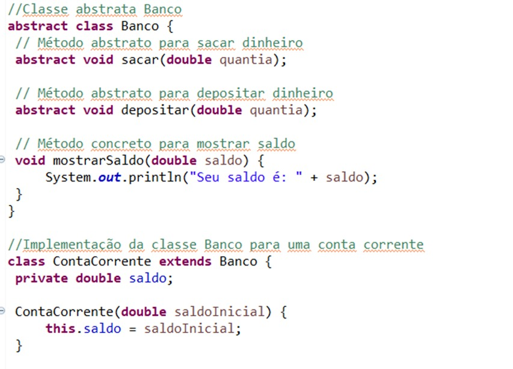
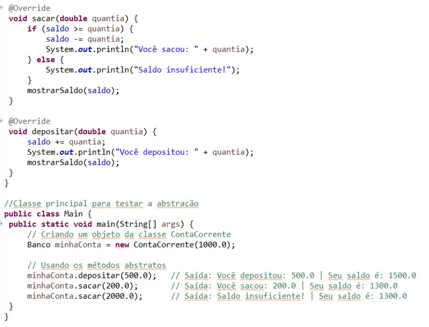
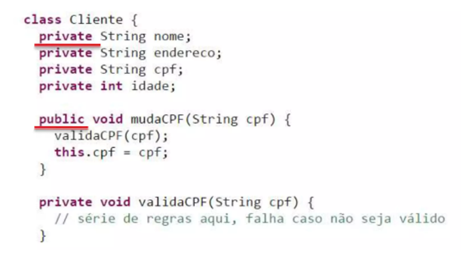
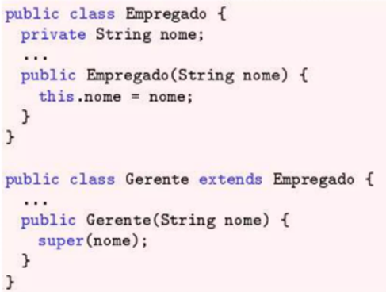
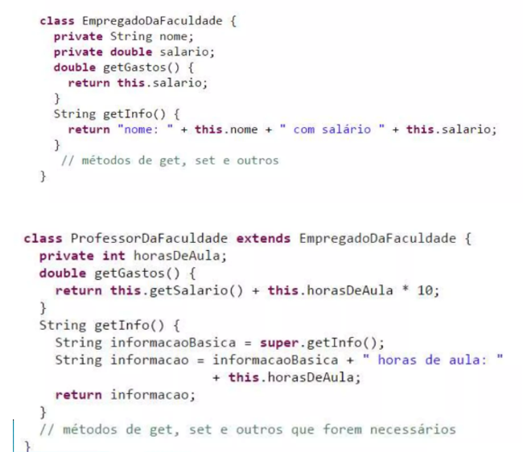

Pilares da Programação Orientada a Objetos
A Programação Orientada a Objetos é um modelo de programação baseado na abstração digital do mundo real. Isto é, a Programação Orientada a Objetos afirma que tudo que há no mundo real possui comportamentos e características, que serão chamados no mundo digital respectivamente de métodos e atributos. Por isso, em códigos que seguem esse modelo estão presentes unidades chamadas de “objetos” que representam as coisas reais e que são capazes de interagir dentro do código.
Nesse tipo de programação, também existem as “classes” que irão conter os objetos. As classes são caracterizadas pelos tais atributos e métodos. Sendo assim, os atributos são as características obrigatórias do objeto que foi determinado na classe, enquanto os métodos são coleções de instruções que esse objeto vai executar.
A exemplo, temos uma classe “frutas” que tem como objetos “laranja”, “maçã” e “morango”. Já como atributos, tem “sabor adocicado”, “aroma característico” e “é rico em suco”. E como métodos, por fim, a classe estabelece “amadurecer” e “ser colhida”. Para seguirmos adiante, também é preciso saber que classes, métodos e atributos podem ser privados ou públicos, o que significa que se forem do tipo privado não poderão se relacionar com outras classes, mas que se forem do tipo público, poderão.
Agora vamos analisar os 4 pilares da Programação Orientada a Objetos:
ABSTRAÇÃO
O princípio da abstração desempenha um papel crucial na Programação Orientada a Objetos, pois ela permite que o código seja simplificado ao se concentrar nas características essenciais de uma situação que provém do mundo real. Na prática, ela faz ser mais fácil, uma tarefa que seria muito difícil. A abstração orienta o programador a ignorar os detalhes irrelevantes ou secundários e assim, reduzir a complexidade do código.
Aplicando este conceito ao exemplo anterior, não adicionaríamos os métodos “estender o braço”, “abrir a mão” e “puxar o fruto”, à classe “frutas”, pois seriam excessivos e desnecessários. Ao invés disso, criamos apenas o método “ser colhida”, reduzindo uma sequência de ações a somente uma.
 
Este código traz classes e métodos abstratos, em combinação a concretos. Nele não precisamos saber como se dá o saldo ou a conta, mas sabemos que existem.
ENCAPSULAMENTO
Este princípio nos orienta a esconder as funcionalidades do nosso código dentro de pequenas unidades de métodos. Desta forma, os métodos terão o papel de “encapsular” instruções mais compridas, para que elas não precisem ser repetidas ao longo do código. Assim, também será possível realizar modificações no sistema de maneira mais cirúrgica, sem que a mesma funcionalidade esteja espalhada por várias partes do sistema.
Para dentro do nosso exemplo da classe “frutas”, o encapsulamento se aplicar para as funcionalidades “crescer” e “ganhar coloração”, que são aspectos do método “amadurecer”. Já que encapsulamos estas funcionalidades em apenas um método, não será necessário repeti-las em todo código.

Neste exemplo em Java, os atributos da classe “Cliente” são privados, enquanto o método é público, para que possa ser reutilizado adiante no código.
HERANÇA
O princípio da herança possibilita que as classes compartilhem seus atributos e métodos entre si. Com base na herança, são nomeados dois tipos de classe: em primeiro, a classe base, que concede características a uma outra classe, e em segundo, a classe derivada, que recebe características da classe base. A herança é excepcional entre classes do tipo público, porque este tipo permite a interação entre as classes.
Em nosso exemplo, podemos estender uma classe derivada da classe “frutas”, chamada “frutasCítricas”. Isto permitirá movermos os objetos “morango” e “laranja” para uma classe mais específica. Dessa forma, nesta nova classe poderíamos excluir métodos ou atributos que frutas geralmente possuem, mas frutas cítricas não possuem. Também podemos fazer com que herdem todos os outros métodos e atributos da classe “frutas” (para relembrar, métodos: “amadurecer” e “ser colhida” e atributos: “sabor adocicado”, “aroma característico” e “é rico em suco”). E ainda, podemos adicionar métodos e atributos específicos das frutas cítricas, como o atributo “ácido cítrico”.

Este código tem como classe base a classe “Empregado”, e como classe derivada a classe “Gerente”, o que é possível verificar pelo termo “extends”.
POLIMORFISMO
O princípio do polimorfismo surge por causa da possibilidade de objetos herdarem características da classe base, mas se comportarem de maneira diferente. Neste caso, o polimorfismo traz a solução de sobrescrever esses métodos ou atributos na classe derivada.
Resgatando o exemplo utilizado até aqui, acerca da classe base “frutas” e a classe derivada “frutasCítricas”, temos que o atributo “sabor adocicado” será mais marcante em objetos da classe “frutasCítricas”, mas será mais tênue em objetos da classe “frutas”. Por fim, isto significa que, apesar de as classes partilharem este atributo, seus objetos possuem comportamentos levemente diferentes em relação a eles.

Analisamos neste código que há uma relação de herança entre a classe “EmpregadoDaFaculdade” e a classe “ProfessorDaFaculdade”, onde os gastos do professor recebe uma alteração que, logicamente é uma atribuição de 10% por hora de aula prestada.
BENEFÍCIOS
Mesmo que pareça complicada, a Programação Orientada a Objetos promove diversas vantagens ao programador.
Podemos citar especialmente a reutilização do código. Isso significa que priorizar a divisão por classes durante a programação, transforma o código em uma espécie de biblioteca, tornando útil as funcionalidades de um único código para projetos futuros. Esse benefício já é demonstrado dentro de um mesmo código a partir do princípio da herança e do princípio do polimorfismo, onde podemos contemplar que métodos e atributos de uma classe são reutilizados por outra. Além disso, estender o código é muito mais simples através da herança que facilita a criação de novas classes.
Também podemos ressaltar o benefício da manutenção simples, ou seja, é possível realizar mudanças que não impactam todo o código e não produzam tantos efeitos colaterais, devido ao princípio do encapsulamento. Isso também está relacionado a segurança, pois o encapsulamento restringe o acesso direto a, por exemplo, os atributos de um objeto.
QUESTÕES COMUNS E RESPOSTAS
Atributos e métodos são aspectos de quem?
Atributos e métodos são necessariamente de uma classe, pois todos objetos pertencentes a classe, possuirão necessariamente seus atributos e métodos.
Qual é a relação entre a Programação Orientada a Objetos e o mundo real?
A Programação Orientada a Objetos estabelece que as entidades do mundo real possuem primordialmente características e comportamentos. Logo, serão essas definições dos objetos na programação, possibilitando a representação mais fiel da realidade, no código.
A abstração é realmente necessária?
Sim, ela é um princípio fundamental da Programação Orientada a Objetos, porque envolve o principal que é a identificar e a modelar as características e comportamentos essenciais de um objeto, ignorando os detalhes irrelevantes ou secundários. Sem ela não seria possível modelar entidades do mundo real de forma simplificada e focada.
Qual a diferença entre herança e polimorfismo?
Apesar de estarem relacionados, herança e polimorfismo são princípios diferentes. A herança se baseia em duas classes que partilham atributos ou métodos, mas no polimorfismo essas classes irão partilhar atributos e métodos com assinaturas levemente diferentes.
FONTES
https://www.devmedia.com.br/uso-de-polimorfismo-em-java/26140
https://www.alura.com.br/artigos/o-que-e-encapsulamento
//devmedia.com.br/conceitos-e-exemplos-heranca-programacao-orientada-a-objetos-parte-1/18579
//blog.balta.io/orientacao-a-objetos-abstracao/
https://medium.com/orangejuicefc/desmitificando-a-programa%C3%A7%C3%A3o-orientado-a-objeto-a45aece3a4a7
https://blog.rocketseat.com.br/entendendo-a-abstracao-em-poo-com-java/#:~:text=A%20abstra%C3%A7%C3%A3o%20%C3%A9%20um%20princ%C3%ADpio,para%20o%20contexto%20em%20quest%C3%A3o.